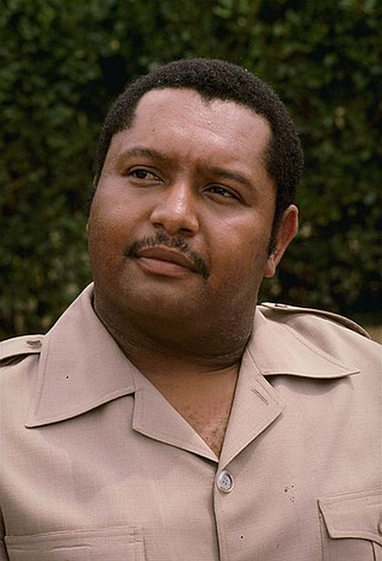

2
1
3
N°1
LE PLUS JEUNE
Haïti · 1971
AVRIL 1971
François Duvalier · « Papa Doc »
François et Jean-Claude Duvalier
PRÉSIDENT À VIE
CONSTITUTION
République d'Haïti
Âge minimum du président
modifiée
RÉFÉRENDUM
OUI
NON
OUI
0
NON
0

Jean-Claude Duvalier
BABY DOC
1971
1986
15 ans
Haïti
France
7 FÉV. 1986
19
ANS
À VIE
avant 20 ans
OUI
NON
Répondez ici
HISTOIRE D'HAÏTI · 1971